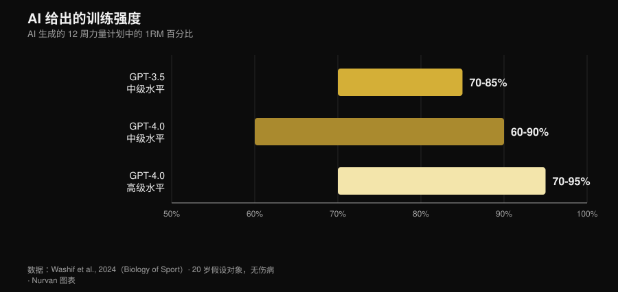
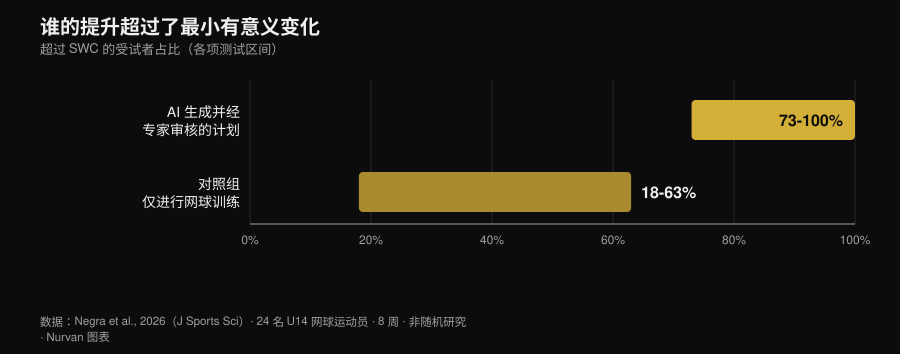

AI 健身计划：研究到底怎么说
你向聊天机器人要一份训练计划，十秒钟后就拿到了十二周的方案：分期、1RM 百分比、组间休息时间，一样不少。看上去很专业。但真正的问题不是 AI 会不会写计划——它当然会——而是这份计划到底是不是你的，以及真正让一份计划起作用的那部分内容，有多少从来没有进入这个文件。从 2024 年开始，有几个研究团队不再争论，而是动手测量：他们让模型生成方案，交给专家按评分量表打分，其中一项研究还让运动员实打实地执行了八周。结果比 App 广告讲的那个版本有意思得多。

快速结论
- 计划看起来是合理的，但它只是草稿。 十二周、三个阶段的方案，强度按水平在 1RM 的 60% 到 95% 之间：结构和教科书对得上，但这些方案「在应用之前很可能需要进一步调整」（Washif et al., 2024）。
- 这不是个性化，而是换了件外套的通用模板。 在同一项研究里，为男性档案和女性档案生成的方案客观上高度相似。模型改掉的是标签，不是内容。
- 它可以有效，前提是先经过人手。 一份由 ChatGPT 生成、在使用前经专家审核的离心训练方案执行八周：5 米冲刺、变向和敏捷性都有提升，弹跳没有（Negra et al., 2026）。
- 「聊天机器人能让你坚持」这句话没有证据。 一项纳入 7 项随机对照试验的系统综述：对成年人身体活动和饮食的效果并不一致，在儿童身上没有发现效果。它对戒烟有用，对健身房没用（Chen et al., 2025）。
- 在热量上，它算单道菜比算一整天更准。 把生成的每日食谱和单道菜谱放回营养成分数据库重新核算：单道菜谱比整天的菜单更站得住（Aslan 和 Sozlu, 2025）。
- 它不是危险，而是不完整。 十二位物理治疗师认为 ChatGPT 的回答是安全的，在六个维度中的五个基本准确，但完整性不足（Schütze et al., 2026）。
当你说「给我一份训练计划」时，实际发生了什么
语言模型并不会计算你的训练方案：它只是根据你输入的内容，预测最可能出现的文本。输出结果是它读过的所有内容的一个「有道理的平均值」，而因为它读过大量严肃的教科书，这个平均值通常看起来挺靠谱。这就是为什么生成的计划第一眼看上去不错：分期在那里，次数区间也合理，热身放在了该放的位置。
问题是从之后开始的。一份训练方案存在的意义，是在某一个具体的人身上产生适应——这个人有自己的负荷史、自己的作息、自己那个会闹脾气的肩膀，以及自己对疲劳的反应方式。这些东西都不在提示词里，也不在模型返回的文本里：它们是一周一周才显现出来的。下面这些研究，量的正是这段距离。
研究到底说了什么
| 常见说法 | 结论 | 来源 |
|---|---|---|
| 「AI 能写出合理的训练计划」 | 成立，但只是草稿 | Washif et al., 2024 |
| 「这份计划是为你量身定制的」 | 不成立 | Washif et al., 2024 |
| 「AI 写的计划没用」 | 不成立，但有一个条件 | Negra et al., 2026 |
| 「新版本已经把问题都解决了」 | 需要补充说明 | Genç et al., 2025 |
| 「聊天机器人能让你坚持」 | 证据不足 | Chen et al., 2025 |
| 「顺便还能让它安排饮食」 | 需要补充说明 | Aslan 和 Sozlu, 2025 |
| 「它很危险」 | 需要补充说明：是不完整，而不是不安全 | Schütze et al., 2026 |
说法 1 ——「AI 能写出合理的训练计划」
第一篇真正深入这个问题的被收录研究，让 GPT-3.5 和 GPT-4.0 为假设的 20 岁训练者设计十二周力量方案，先是中级水平，然后是高级水平。两个版本都给出了三个为期四周、目标各不相同的阶段（增肌、力量），参数落在教科书区间之内，组间休息也彼此自洽。

版本之间的差异确实存在，而且方向符合预期：GPT-4.0 会区分中级和高级，把休息时间的窗口放宽（从 60–180 秒扩到 60–300 秒），一次能处理更多信息。但作者的结论依然很直接：这些方案「在应用之前很可能需要进一步调整」，模型「可以作为写草稿的辅助工具」。
草稿这个词是关键。一份看起来说得过去的计划，不等于一份适合你的计划。
说法 2 ——「这份计划是为你量身定制的」
这是同一项研究里最尴尬的结果，而几乎没人引用它。作者只需要把提示词里的性别改掉，就能看出会发生什么：所有生成的方案都不分性别地客观相似。这不是在说生理学——男性和女性的训练建议本来就有大量重叠——而是在说机制：模型没有用上它唯一拿到的那条个体信息。
如果提示词里明确写出来的信息都没能改变输出，那么你没有写出来的东西，权重就是零。而你没写出来的几乎是全部：你睡了多久，昨天那堂训练让你付出了多少代价，为什么右肩只在宽握卧推时才难受。
说法 3 ——「AI 写的计划没用」
第一项干预研究在 2026 年落地。24 名 14 岁以下网球运动员分成两组：一组执行由 ChatGPT 生成的离心训练方案八周，另一组照常只练网球。AI 组在 5 米冲刺、变向（505 测试）和敏捷性上有显著提升，效应量在 0.6 到 2.15 之间，对照组为 0.15–0.6。在 10 米冲刺和弹跳测试上，两组没有差异。

那个条件藏在方法部分的一行字里：AI 生成的方案在交给任何人之前，先经过了真人专家的审核。这不是「AI 带了一群孩子训练」，而是「专家用 AI 写出第一版，检查过，然后才拿去执行」。这正是真正有效的工作流程，也正是这项研究并不允许你跳过审核的原因。
说法 4 ——「新版本已经把问题都解决了」
一个研究团队让三个版本的 ChatGPT 按七套不同的指令生成十二周力量方案，然后请七位专家评分——持有 CSCS 认证的教练和运动科学博士，从业至少十年——评分量表涵盖了进阶的个体化程度、方案可修改性、受伤风险，以及是否出现错误建议等内容。
版本之间的差异在所有两两比较中都达到统计学显著（p = 0.018），最新版本被认为更详细、内部更一致，也更有文献依据。进步是真实的。但作者的结论和 2024 年那篇一模一样：要让一份 AI 辅助的方案做到安全、有证据支持且个体化，「合格的人类专业参与仍然是必要的」。新版本改善的是草稿，而不是取代审核。
说法 5 ——「聊天机器人比教练更能让你坚持」
在这一点上，营销话术跑得远远快过数据。一项系统综述检索了十二个数据库、6301 条记录，筛出能进行自然语言自由对话的聊天机器人随机对照试验：最后只剩七项。在戒烟方面，效果是一致的。在成年人的饮食和身体活动方面则并不一致，在儿童身上没有发现效果，而四项身体活动研究里有两项存在高偏倚风险。
有一个细节解释了很多事：用户整体上跟聊天机器人互动得很积极，但在具体的健康行为上互动少得多。满意度很高，行为改变却没有。这就是「一个你喜欢的 App」和「一个让你真去训练的 App」之间的区别，也正是一个讨人喜欢的教练和一个能出结果的教练之间的区别。关于人工监督的那些数字，我整理在线上教练到底有没有效那篇文章里。
说法 6 ——「顺便还能让它安排饮食」
一项先导研究让 ChatGPT 分别给出 1500、2000、2500 千卡的每日食谱，以及 300、500、700 千卡的单道菜谱，然后把所有内容放回营养成分数据库重新核算。结果是：模型在做一道达到指定热量的菜谱时，比安排一整天的食谱更准确——对象越小、边界越清楚，误差累积得越少。
这是一项基于现已过时版本的先导研究，所以它的价值在于方法上的提示，而不是定论。但这个提示依然有用：用 AI 处理局部，不要用它搭架构。而当你需要真实的克数时，你需要的是食物数据库里的真实克数，不是一个听起来合理的估计。
说法 7 ——「它很危险」
最严格的那场测试来自健身房之外。十二位资深物理治疗师对 ChatGPT 回答的六个关于某种罕见肌肉疾病运动问题的答案进行了评分，量表从「完整且准确」一直到「错误且不安全」。结论是：在六个维度中的五个里，回答是安全且基本准确的，但经常不够完整。
这是一种很典型的风险画像：它不会让你去做什么荒唐的事，它会告诉你一些合理的东西，然后把真正要紧的那部分漏在外面。运动医学给出的结论是一样的：模型在自家基准测试上的表现，不会自动转化成更好的临床结果，专业人员仍然留在流程之中，负责把信息整合起来（Palermi et al., 2026）。一个迟迟不好的症状、一处越来越疼的地方、一份需要解读的检查报告：那是医生的工作，不是聊天机器人的。
怎么用才算用对
- 用它写草稿，不要用它做决定。 一份起步计划、动作替换的思路、把你已有的方案重新排一遍：可以。决定明天上多少重量：不行。
- 把你真正掌握的信息给它。 负荷史、最近几次训练的 RIR、每周能训练的天数、伤病情况。没有这些，正如 Washif 的研究所显示的，就算你换掉档案，输出也几乎不动。
- 逐个核对数字。 如果它引用了某项研究，就去查一下：凭空编造的参考文献，是把一个错误观念带进健身房最快的路径。
- 让看得懂的人过一遍。 在唯一那项结果为正的干预研究里，方案在使用前经过了真人专家审核。这就是工具和替代品之间的那条界线。
- 用测量代替信任。 四周之后看重量，而不是看感觉：如果草稿没能带来进步，那它就是份错的草稿。
- 别让它碰医疗。 疾病、用药、检查结果：没有任何聊天机器人、任何 App 能替代。去看医生。
试用 Nurvan —— AI 写草稿，你的数据来修正
在 Nurvan 里，一份计划不会停留在一段文字：每一组的重量、次数和 RIR 都会进入你的训练历史，热身组按当天的工作重量自动给出，进阶则建立在你真正举起来的数字之上。如果你跟教练合作，他看到的是同一批数字，并在关键的地方做出调整——而这恰恰是生成式计划缺掉的那一块。
常见问题
可以用 ChatGPT 给自己写健身计划吗？
当草稿可以，当最终方案不行。评估过生成式计划的研究都把它们描述为结构上说得通、但需要调整，并且在一点上意见一致：要让这些计划变得安全且个体化，需要合格的人类专业判断（Washif et al., 2024；Genç et al., 2025）。
AI 生成的训练计划，男性和女性会不一样吗？
在验证过这一点的研究里，不会：为男性和女性档案生成的方案客观上高度相似（Washif et al., 2024）。如果你只因为写明了自己是谁就期待个性化，那你大概并没有得到它。
AI 健身 App 能帮我坚持下来吗？
目前还没有可靠证据。在已有的七项随机对照试验中，聊天机器人对成年人身体活动和饮食的效果并不一致；唯一一致的结果出现在戒烟上（Chen et al., 2025）。
AI 私教和真人教练，该选哪个？
它们并不是在抢同一份工作：一个写文字，另一个看着你。监督方面的数据说明，人的决定性贡献是让一份计划被正确执行，而不是把它写出来——每五名训练者配一位指导者时，卧推最大重量提升了 15.9%，而每二十五人配一位时只有 10.2%（Gentil 和 Bottaro, 2010）。
延伸阅读
- 线上教练有效吗？研究怎么说 —— 被人盯着练到底有多重要，用数字说话。
- 增肌该做多少次？8–12 次的迷思 —— AI 草稿接手的那些训练变量，以及证据对它们的说法。
- 2027 健身趋势：什么才真正有效 —— 在潮流和真正扛得住的东西之间，技术究竟站在哪里。
参考文献
参考文献通过 PubMed 检索获得。选题来自 2026 年 11 月 2 日的趋势调研：「AI 还是教练」是当下健身领域搜索量最高的问题之一，但占据这些搜索结果的页面全是健身软件公司的博客，没有引用过任何一篇研究。
- Washif JA, Pagaduan J, James C, Dergaa I, Beaven CM, 2024. Artificial intelligence in sport: Exploring the potential of using ChatGPT in resistance training prescription. Biology of Sport 41(2):209-220. PMID 38524820. DOI
- Genç A, Aydın GR, Kasap M, Özkan A, Rakhymzhanov A, Gürcan HH, Güllü S, Demirhan B, 2025. Comparative evaluation of ChatGPT versions in training program design: scientific approach, accuracy, and practical applicability. BMC Sports Science, Medicine and Rehabilitation 18(1):19. PMID 41345701. DOI
- Negra Y, Sammoud S, Bouguezzi R, Markov A, Capranica L, Müller P, Chaabene H, 2026. Effects of a ChatGPT-generated eccentric training programme on speed, change of direction, agility, and jumping performance in U14 tennis players: A non-randomised controlled study. Journal of Sports Sciences. PMID 41944488. DOI
- Chen J, Hu RZ, Zhuang YX, Zhang JQ, Shan R, Yang Y, Liu Z, 2025. Natural Language Processing Chatbot-Based Interventions for Improvement of Diet, Physical Activity, and Tobacco Smoking Behaviors: Systematic Review. JMIR mHealth and uHealth 13:e66403. PMID 40503914. DOI
- Aslan S, Sozlu S, 2025. A pilot study of the potential role of ChatGPT in stated-calorie diet planning. International Journal of Obesity 49(9):1891-1896. PMID 40628963. DOI
- Schütze K, Shehatha R, Beer K, Needham M, Smith T, Bagg M, Doverty A, Cooper I, 2026. Evaluating ChatGPT's advice and recommendations regarding exercise for people with inclusion body myositis. Neuromuscular Disorders 62:106418. PMID 41950577. DOI
- Palermi S, Pucciatti R, Regnard NE, et al., 2026. Artificial Intelligence in Sports Medicine: A Decision-Centered Framework for the Future Sports Physician. Diagnostics 16(10):1448. PMID 42196815. DOI
- Gentil P, Bottaro M, 2010. Influence of supervision ratio on muscle adaptations to resistance training in nontrained subjects. Journal of Strength and Conditioning Research 24(3):639-43. PMID 19661830. DOI
Giammaria Loi 是 Nurvan 的创始人。他从 2012 年开始进行负重训练，2013 年起担任私人教练并持有 FIPE 认证教练资格，2018 年起在全国级别的力量举比赛中参赛。他署名的每一篇文章，都从科研文献出发，落到健身房里真正有效的做法上。
注意：本文为科普内容，不能替代医生或专业人士的诊断与建议。